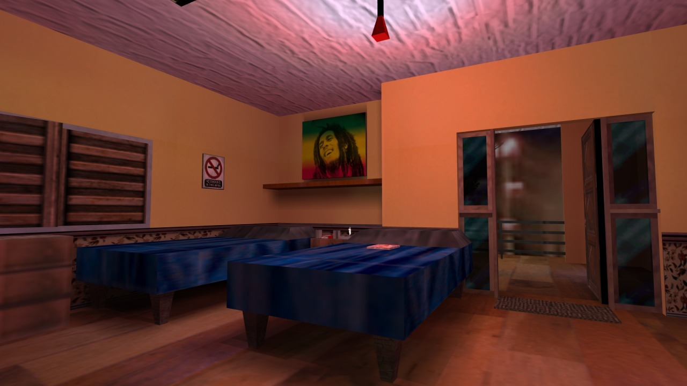

Creativity is hard. Really hard. I regularly run into people who claim to simply not have an imagination, and while I’m not one to insist that every human being is a boundless font of wondrous fantasies waiting to be uncorked, it seems far more likely that they’ve just underestimated the difficulty involved. Creativity without bounds is even harder: confront most people with a blank canvas and they’ll probably struggle to do more than doodle idly, or fall back on some reliable standby, like a still life of a fruit bowl or a drawing of that cool S that every primary school kid knew how to make.
It’s the same story with level design, naturally. When granted the infinite power of the Hammer editor—alright, not so much ‘infinite’ as ‘modest, obtuse, flexible, a little bit buggy’—a lot of people tend to forego alien landscapes and secret laboratories, instead opting to recreate… their house. Or their school. Or their office. Familiar, mundane spaces; the sorts of places that the designers must’ve seen every day. Such maps litter the Counter-Strike community’s ageing archives, passing slowly into total obscurity alongside de_dust2 clones and deathmatch yards with misaligned textures.
As far as most people are concerned, the appropriate response is “good riddance to bad, unplayable rubbish”. They were crap. Counter-Strike, contrary to its gritty, tactical façade full of burly men with military hardware strapped to every inch of their body armour, doesn’t actually perform well with faithfully recreated realistic spaces. They’re too cramped, or too wide-open; too cluttered, or too empty; too full of areas that are impossible to hold down, or impossible to assault. You ever do that thing with your housemates where you’re both heading towards one another in a corridor and neither of you can pass because you keep picking the same side to pass each other on? Right. Now imagine that you have the size and flexibility of a fridge freezer. Also you’re stuck in a door that won’t stop trying to open, and you’re being shot in the shins, and your housemate is actually a man in a balaclava who fucked your mum.
What I’m saying is that these maps had very little value as spaces for play, which is—rather understandably—the only metric we ever really gauge them by. We see level design as a means of creating a product; an arena for twitchy young men to gun each other down in on a lazy Sunday afternoon. A map is the platform on which experiences play out, not the experience itself. Nevertheless, like any blank canvas, the level editor’s grid is a creative medium through which aspects of the designer can seep, and while most maps are pretty outrageously poor at getting such aspects across, it’s a different story when the map itself is a recreation of somewhere the designer has personally left their mark on.

Have you ever wanted to see inside a stranger’s home? I don’t mean in a creepy, antisocial, ‘stake out for twelve days working out when it’s safe to break in and sniff the toilet seat’ kind of way. I’m talking about seeing a single incandescent square on the side of a darkened apartment block on your evening train ride home, and wondering what kind of life that person lives. I’m talking about waiting in the living room of a stranger while they fetch the television you bought off them on Craigslist, taking in every possible detail out of mild curiosity; I’m talking about wanting to be a fly on the wall, not of somebody you know, but of a person you have no connection to and will never meet, just to see all the little ways that their lifestyle differs from yours. It’s a special kind of intimacy, driven not by perverted fantasy but by the knowledge that everybody’s life is a different story, and the honest craving for just a tiny slice of that story.
When people recreate the spaces that are important to them as maps, they inject a little bit of that intimacy into them. They’re inviting you—all of you, even the requisite weirdos—to explore these recreations, use them as stages for play, get familiar with every last nook and cranny and work out which ones can be best abused. They may be crude imitations of physical locations, limited by the constraints of the engine, tweaked for gameplay and cobbled together out of whatever ill-fitting assets the designer had to hand, but they still reflect reality, hinting at their creators’ lives, the things they value and the things they notice most about the world around them. In a community for a game played all over the globe, by people from a wide range of socio-economic and cultural backgrounds, a diversity of physical spaces is only to be expected.
And not to overstate my part in this, but in my endless archaeological digs through the GoldSrc community’s not-entirely-lifeless ruins, I’ve seen them all. I’ve tossed flashbangs through the living-room windows of suburban homes, perfectly clone-stamped across canvases of freshly-trimmed grass; I’ve led hostages down the stairwells of ageing Soviet housing tenements, pausing only to check out the album of reference photographs that guided their creation; I’ve played grenade dodgeball in the halls of American elementary schools, pondering the kind of reactionary panic such a map must have had to endure around the turn of the millennium; I’ve been in college dorms, glass-filled offices, upper-class mansions, inner-city apartments, country abodes, public libraries, terraced houses and oh-so-many net cafes, all crafted by people who would have seen them in the flesh—or at least, in the mortar—on a regular basis. They invited me into these spaces, in a form quite unlike amateurish camcorder footage or photographs. You only see what they choose to put there, and however sanitised that may be, you can explore what’s been made available to your heart’s content.
You can learn a lot from the small details people choose to spend their meagre polycounts on, too. Much like in rats maps—a phenomenon we should probably leave packed away for another day, I think—many choose to flaunt possessions or taste, meticulously placing game boxes, planting functional stereos, or modelling their workstations, complete with monitors displaying their favourite forum boards. Others are careful to map out every last inch, from closets to crawl-spaces, clearly as invested in exploration of the real-world space as the virtual one. For some, what matters is a perfectly accurate, to-scale floor plan; others wrap blurry photographic textures, clearly sourced from their own camera, around barely-fitting brushwork. They’re no substitute for a hefty autobiographical tome, but they’re a similar sort of avenue: an outlet through which a creative work can serve its functional purpose, yet still say “this is who I am, and where I come from”.
So remember, even in the world of flashbangs and sick headshots, level design doesn’t have to be primarily for the purposes of play. For a multiplayer game like Counter-Strike, inherently built for those who already live in a connected world, designers sharing works that allow an occluded peek into their everyday world seems almost inevitable; a kind of obtuse ‘About Me’ for a world that had yet to be engulfed by the full force of social networking. Perhaps, with time, designers so inclined will learn to consciously throw away all pretences of balanced gameplay, and simply invite people to freely wreak havoc in minutely-detailed recreations of the spaces they call home. It’s cathartic, y’know?